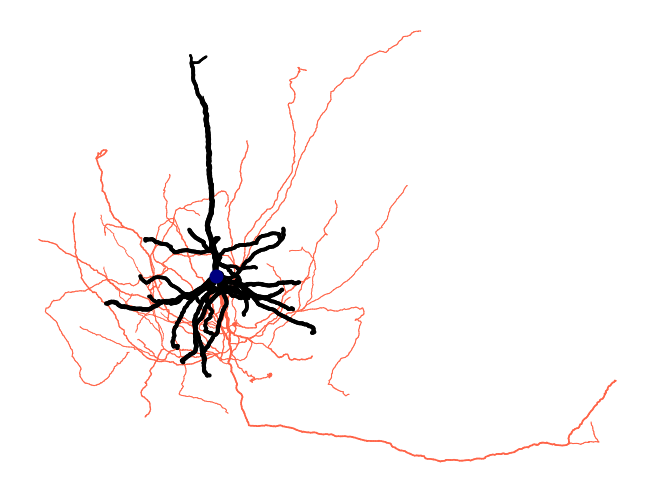

Ossify
If you work with neuron reconstructions that have meshes, skeletons, and synapse tables, ossify lets you move data between them without writing your own mapping code. It handles the linking between representations, so you can focus on analysis.
import ossify as osy
# Load a cell — this one is a real neuron from MICrONS, hosted publicly
cell = osy.load_cell('https://github.com/ceesem/ossify/raw/refs/heads/main/864691135336055529.osy')
print("Cable length:", cell.skeleton.cable_length(), "nm")
print("Presynaptic sites:", len(cell.annotations.pre_syn))
# Map volume data from the graph layer onto the skeleton
volume = cell.graph.map_features_to_layer("size_nm3", layer='skeleton', agg='sum')
cell.skeleton.add_feature(volume)
# Filter to dendrite only — linked annotations update automatically
with cell.skeleton.mask_context(cell.skeleton.features['compartment'] == 3) as masked_cell:
print("Dendrite cable length:", masked_cell.skeleton.cable_length(), "nm")
print("Dendrite presynaptic sites:", len(masked_cell.annotations.pre_syn))
# Visualize with features mapped to color and line width
fig = osy.plot.plot_cell_2d(
cell,
color='compartment',
palette={1: 'navy', 2: 'tomato', 3: 'black'},
linewidth='radius',
linewidth_norm=(100, 500),
widths=(0.5, 5),
root_marker=True,
units_per_inch=100_000,
)

What Makes Ossify Different?
Ossify is built around the idea that neurons have multiple representations (mesh, skeleton, graph, annotations) that describe the same physical object. Its core feature is linking — explicit mappings between these representations that let you reliably translate features and indices across them.
This means you can:
- Aggregate mesh surface area onto skeleton vertices
- Count synapses per skeleton branch
- Filter to a compartment and have all linked data update automatically
- Move any feature from any layer to any other linked layer
See Core Concepts for the full picture, or jump to Getting Started to try it yourself.
Installation
Ossify requires Python 3.11 or higher. For uv users, add it to your pyproject.toml.
Pre-release
Ossify is in pre-release. The API may change — see the Changelog for updates.
Related Tools
CAVEclient
CAVEclient is the Python client for the CAVE database system. Ossify integrates with it to load cells directly from datasets like MICrONS and FlyWire.
NGLui
NGLui maps local data analysis to Neuroglancer, a web-based 3D viewer. Useful for inspecting your analysis in its full spatial context.
Cortical-tools
Cortical-tools is an opinionated extension of CAVEclient focused on MICrONS and V1dd. It has features for mapping mesh vertices to level-2 IDs, which can be used to incorporate surface meshes into an ossify Cell.
Alternative Tools
Navis
Navis focuses on skeleton-based neuronal morphology. It has excellent support for coordinate transformations (especially fly template brains) and exports to Blender and NEURON. Ossify complements Navis with multi-representation support and cross-layer linking.
CloudVolume
CloudVolume provides access to volumetric image and segmentation data in cloud formats. It focuses on data access rather than morphological analysis.
MeshParty
MeshParty was a precursor to many of ossify's ideas. It has tools for mesh and skeleton processing but predates many CAVE features. Ossify builds on these ideas with more advanced linking, mapping, and analysis capabilities.